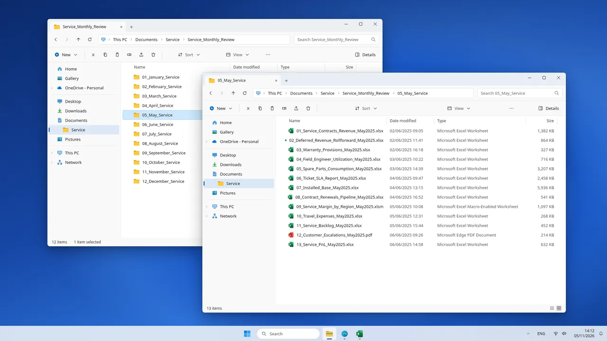
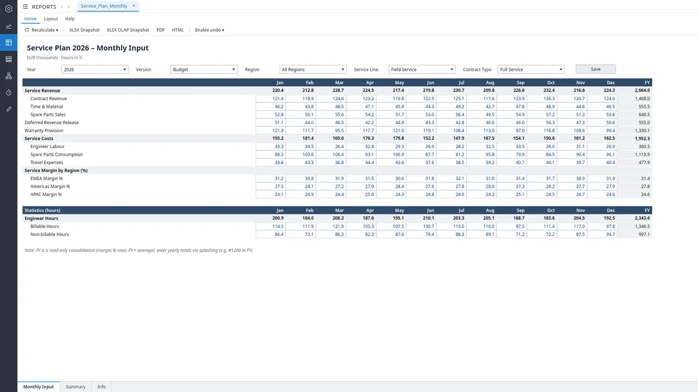
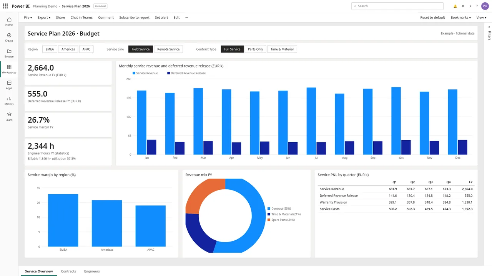
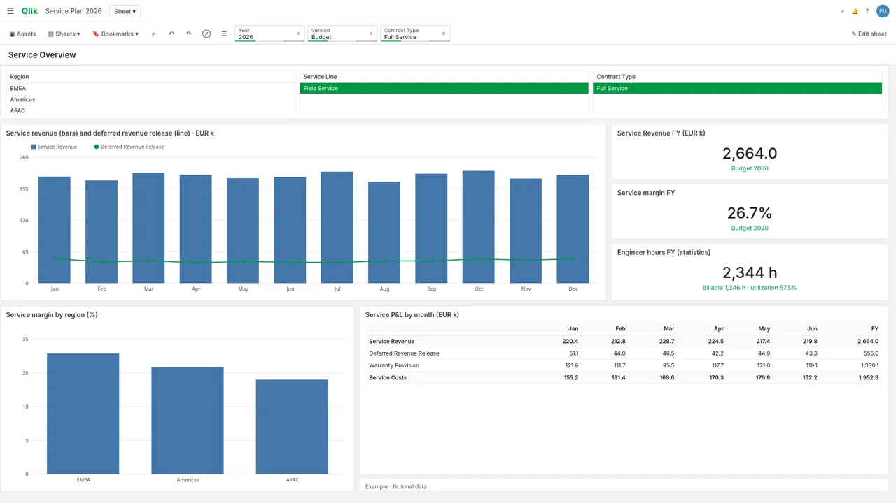

Typical scenario
Service planning
Annual plan in half the time, forecast deviation from ±8% to ±3% Estimated impact
Typical service planning at a mid-size medtech service business: about EUR 120m service revenue, 250 field engineers across three regions.
- Jedox
- Snowflake
- Power BI
- Qlik Sense
- Excel VBA
Before and after Estimated impact
BeforeAfter
Challenge
- Planning ran on CRM and field service exports plus Excel.
- Deferred revenue and warranty rolled forward by hand.
- Regional margin and engineer hours never reconciled.
Impact
- Margin and capacity tell the same story.
- Next year's plan starts from a model, not a copy.
Solution
- JedoxMonthly plan input with margin by region and a separate engineer-hours statistics block.
- SnowflakeContract, installed base and ticket data in one model.
- Power BIRevenue and deferred revenue trend, margin by region, revenue mix and quarterly P&L.
- Qlik SenseRevenue combo chart, KPIs including engineer hours, and margin by region.
- Excel VBAUploads regional plan files during the transition.
Screenshots
Mockups with fictional data.







